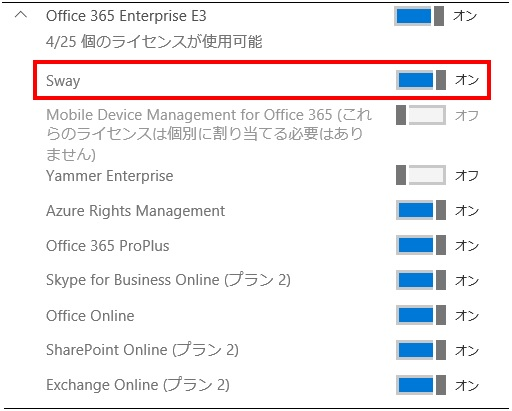

(※ 2016 年 6 月 8 日に Office Support Team Blog JAPAN に公開した情報のアーカイブです。)
こんにちは、Office サポートの佐村です。
本記事では Office 365 にて公開されている Sway について、PowerShell スクリプトを使用して一括でテナント全体のユーザーのライセンスを有効化、無効化する方法をご案内いたします。
2016/07/27 update
Office 365 管理センター - [サービス設定] - [Sway] - “組織全体に対して Sway をオンまたはオフにします。”
の設定が廃止されました。
目次
1. Sway のライセンスについて
2. PowerShell を使用して一括で有効化する方法
3. PowerShell を使用して一括で無効化する方法
4. 関連情報
1. Sway のライセンスについて 2016/07/27 update
Office 365 Sway は、2015 年のリリース以降、Office 365 管理センター の[サービス設定] - [Sway] - “組織全体に対して Sway をオンまたはオフにします。” のスイッチにて、利用の可否を制御していました。
しかし、Office 365 アプリケーションランチャー上のタイルが非表示とならないことや、ユーザー単位での利用を制御できないという問題があったため、 2016 年より “ユーザー単位のライセンスモデル” の展開が進められてきました。
ユーザー毎のライセンスオプションに Sway のスイッチを設けることで、アプリランチャーの制御やユーザー単位での Sway の利用の制御が可能となっております。
なお、現在 “組織全体に対して Sway をオンまたはオフにします。” のスイッチ は廃止しております。
ユーザー単位のライセンスオプションの設定では、例えば Office 365 E3 の場合は下記の様に Office 365 管理センターのユーザー管理のページにてライセンスの詳細項目を表示することで、確認可能です。 [ユーザー] – [アクティブなユーザー] – [製品ライセンス] の編集 を選択します。

手動でライセンスの変更を行う場合は、上記にて Sway をオン、もしくはオフにすることで、該当ユーザーの Sway の有効化、無効化を行うことができます。 しかしながら、テナント全体でオン、オフにする、といったような設定方法はないため、下記 2. および 3. にて、PowerShell を使用して一括で実行する方法をご案内いたします。
2. PowerShell を使用して一括で有効化する方法
PowerShell を利用するには、以下のページで PowerShell をインストールし、事前設定を行う必要があります。
タイトル : PowerShell の導入について
アドレス : https://officesupportjp.github.io/blog/PowerShell の導入について/
Power Shell を導入後、下記の有効化のスクリプト内容をコピーし、ps1 ファイルとして保存します。(例 : EnableSwayLicense.ps1)
connect-msolservice -credential $msolcred
ライセンスが割り当てられた全ユーザーの列挙
$users = Get-MsolUser -All | where {$_.isLicensed -eq “True”}
ユーザー毎のライセンス/サービスの確認と変更
1 | foreach ($user in $users) |
PowerShell を起動し、EnableSwayLicense.ps1 ファイルを保存したフォルダーに移動し、下記の様に実行します。(下記は c:\temp 以下に ps1 ファイルを保存した場合の例となります。)
cd c:\temp
.\EnableSwayLicense.ps1
認証ダイアログが表示されますので、ご利用中のテナントの管理者アカウント (adminuser@tenant.onmicrosoft.com 等) およびパスワード情報を入力します。
処理中の内容が表示されますので、プロンプトが戻るまで待ちます。
処理完了後、ブラウザーにて Office 365 を表示していた場合は一度ブラウザーを終了させ、再度 Office 365 にサインインします。
ユーザーのライセンス付与状況を確認し、Sway 製品のライセンスが期待通りとなっていることを確認します。また、アプリケーション ランチャー上の Sway のタイルの表示が期待通りとなっていることを確認します。
3. PowerShell を使用して一括で無効化する方法
PowerShell を利用するには、以下のページで PowerShell をインストールし、事前設定を行う必要があります。
タイトル : PowerShell の導入について
アドレス : https://officesupportjp.github.io/blog/PowerShell の導入について/
Power Shell を導入後、下記の無効化のスクリプト内容をコピーし、ps1 ファイルとして保存します。(例 : DisableSwayLicense.ps1)
connect-msolservice -credential $msolcred
ライセンスが割り当てられた全ユーザーの列挙
$users = Get-MsolUser -All | where {$_.isLicensed -eq “True”}
ユーザー毎のライセンス/サービスの確認と変更
1 | foreach ($user in $users) |
PowerShell を起動し、DisableSwayLicense.ps1 ファイルを保存したフォルダーに移動し、下記の様に実行します。(下記は c:\temp 以下に ps1 ファイルを保存した場合の例となります。)
cd c:\temp
.\DisableSwayLicense.ps1
認証ダイアログが表示されますので、ご利用中のテナントの管理者アカウント (adminuser@tenant.onmicrosoft.com 等) およびパスワード情報を入力します。
処理中の内容が表示されますので、プロンプトが戻るまで待ちます。
処理完了後、ブラウザーにて Office 365 を表示していた場合は一度ブラウザーを終了させ、再度 Office 365 にサインインします。
ユーザーのライセンス付与状況を確認し、Sway 製品のライセンスが期待通りとなっていることを確認します。また、アプリケーション ランチャー上の Sway のタイルの表示が期待通りとなっていることを確認します。
4. 関連情報
タイトル : Office 365 Sway を無効にした後でもアイコンがアプリ起動ツールに表示される
アドレス : https://support.microsoft.com/ja-jp/kb/3075256